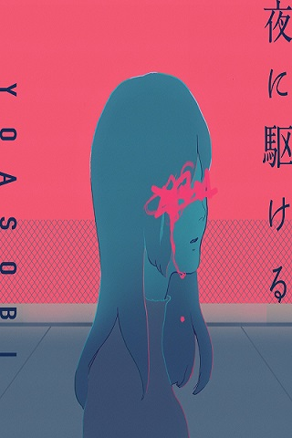

About The Music
YORU NI KAKERU / INTO THE NIGHT
"Yoru ni Kakeru" berhasil membawa YOASOBI merajai chart di awal
debut mereka. Lagu ini memiliki tempo cepat dengan nada yang catchy.
Temponya yang cepat membuat lagu ini terdengar seperti lagu yang
ceria.
Namun nyatanya lagu ini sendiri menggambarkan kesedihan yang
mendalam. "Yoru ni Kakeru" memiliki arti berlari di malam hari. Lagu
ini diambil dari kisah "Thanatos no Yuuwaku". Kisah tersebut
bercerita tentang seorang lelaki yang bertemu wanita yang ia cintai
di titik terendah wanita tersebut. Ia selalu berusaha menghibur dan
membuat wanitanya bahagia. Sayangnya di akhir cerita, mereka melebur
bersama dalam kesedihan yang ada dan memutuskan untuk mengakhiri
hidup.
Profile
Yoasobi
Nama "yoasobi" berasal dari bahasa Jepang yang artinya "kehidupan malam". Ayase, selaku produser dari grup duo ini mengatakan, nama ini sebagai harapan bahwa mereka dapat menghadapi berbagai rintangan yang menyenangkan. Nama ini juga diharapkan bisa menyeimbangkan kehidupan mereka di siang hari sebagai seorang individu dan di malam hari sebagai seorang seniman. Slogan dari grup ini adalah Novel Into Music atau dalam bahasa Jepang shōsetsu o ongaku ni suru.
Anggota Yoasobi
Seperti yang sudah disinggung di atas, grup ini merupakan duo berisikan 2 orang yaitu :
Tanggal lahir: 4 April 1994
Tempat lahir: Yamaguchi
Tanggal lahir: 25 September 2000
Tempat lahir: Tokyo
Karya YOASOBI
Berikut lagu-lagu Yoasobi dari tahun 2019 hingga 2022
THE BOOK (2019)
THE BOOK 2 (2021):
E-Side (2021)
Lyric Songs
Yoru Ni Kakeru (English ver) - Yoasobi
[Intro]
Seize a move, you're on me
Falling, and we were dissolving
You and me, skies above and wide
It brings on the true
night on me
[Verse 1]
All I could feel was a "goodbye"
Those only words you wrote, it's plenty to understand ya
The sun is going down, the sky behind and
Visions of you would stand
Overlapping with you and the fence beyond
Remember the night that we met up?
Broke into me and taken everything left in my heart
So fragile, is that air, it always keeps on rеvolving near and
wide
Loneliness envelops deep in your eyes
[Pre-Chorus]
It's stuck in "tick-and-tocking" mode
Never refraining shamble, block of sound
Too many terrible noises around And the voice ringing in me gets
louder
With tears about to fall
I need to find me an average happy tiptoe
Locating, never tough when I'm with you
[Chorus]
Saw what got seen hid beneath, and louder nights keep beating
I'm going to you, and giving brighter shiny tomorrows
What can "night" for you mean, infinite? You could run with me
Place your hand in mine, you gotta stay, hold up
Want to leave it behind, dark cruel days
In deep, you may have hid before
I'm embracing you until more heat dissolve what is caught up
Sun will soon rise up into a day you're no more too afraid
Keep all of me in you
[Verse 2]
Only perceiving through your eyes
I see nothing, I'll soon hate you,
keep me out, I'm crying out
You're falling into deeper fascination,
givin' away your love
That expression has got me crying out
[Verse 3]
She's gonna try to me, she's gonna lie
Got to force a belief and trust to keep on
Every time it happens, heap of attack, and now I'm back in
I got to cry, then who knows?
So we gotta keep on, if you gotta keep on
Then we're gonna keep on
One day, we will understand, I'm believin' in you
[Bridge]
"No, wanna stop it, but you got me tired of walking"
As I show my needs, I reach to get back on, still not fit in
You free my hand, then leave it
"No, wanna stop it, you got me tired of walking"
Never told you the truth, I'm feeling that inside
[Pre-Chorus]
Back for another "tick-and-tocking" mode
Never refraining shamble, block of sound
Killing, oh, too many words that I gathered around
Won't let me go to your mind
"I want it to be done" is what went out
It found a way to finally leak out of me
And for once, I could make you let out a smile
[Key Change]
Saw what got seen hid beneath
And louder nights are keeping me down
My new images of you, now, appear heavenly now
What can "night" for you mean when fallen seas of tears are gone?
They dissolve into the peace inside of you, oh
[chorus]
Calling to life, hit beneath, crying days in the eternal
Seize a move, you're on me, falling and we were dissolving
See me to it, fog is leaving, bright air move
Want to leave it behind, tucked all days away, forget, and hid
beneath
Hand in hand, extend to me, that let me know beyond falls
Through the seas of beyond, so loud and blows you afloat in the
sky
New wind moving into you
[Outro]
Tonight, don't ever lose sight of me and let go
You and me are running through the night in dark, I'll take you
untuk lagu lainnya silahkan klik disini atau klik "list gallery musik" diatas